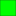
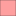

<!doctype html>
<html lang="en">
    <head>
        <meta charset="utf-8">
        <meta http-equiv="X-UA-Compatible" content="IE=edge">
        <meta name="viewport" content="initial-scale=1,user-scalable=no,maximum-scale=1,width=device-width">
        <meta name="mobile-web-app-capable" content="yes">
        <meta name="apple-mobile-web-app-capable" content="yes">
        <link rel="stylesheet" href="css/leaflet.css">
        <link rel="stylesheet" href="css/L.Control.Layers.Tree.css">
        <link rel="stylesheet" href="css/qgis2web.css">
        <link rel="stylesheet" href="css/fontawesome-all.min.css">
        <link rel="stylesheet" href="css/leaflet-measure.css">
        <style>
        html, body, #map {
            width: 100%;
            height: 100%;
            padding: 0;
            margin: 0;
        }
        </style>
        <title></title>
    </head>
    <body>
        <div id="map">
        </div>
        <script src="js/qgis2web_expressions.js"></script>
        <script src="js/leaflet.js"></script>
        <script src="js/L.Control.Layers.Tree.min.js"></script>
        <script src="js/leaflet.rotatedMarker.js"></script>
        <script src="js/leaflet.pattern.js"></script>
        <script src="js/leaflet-hash.js"></script>
        <script src="js/Autolinker.min.js"></script>
        <script src="js/rbush.min.js"></script>
        <script src="js/labelgun.min.js"></script>
        <script src="js/labels.js"></script>
        <script src="js/leaflet-measure.js"></script>
        <script src="data/_3.js"></script>
        <script>
        var map = L.map('map', {
            zoomControl:false, maxZoom:28, minZoom:1
        }).fitBounds([[33.73761402941038,133.52754858764496],[33.80890651724422,133.65799866961362]]);
        var hash = new L.Hash(map);
        map.attributionControl.setPrefix('<a href="https://github.com/tomchadwin/qgis2web" target="_blank">qgis2web</a> &middot; <a href="https://leafletjs.com" title="A JS library for interactive maps">Leaflet</a> &middot; <a href="https://qgis.org">QGIS</a>');
        var autolinker = new Autolinker({truncate: {length: 30, location: 'smart'}});
        // remove popup's row if "visible-with-data"
        function removeEmptyRowsFromPopupContent(content, feature) {
         var tempDiv = document.createElement('div');
         tempDiv.innerHTML = content;
         var rows = tempDiv.querySelectorAll('tr');
         for (var i = 0; i < rows.length; i++) {
             var td = rows[i].querySelector('td.visible-with-data');
             var key = td ? td.id : '';
             if (td && td.classList.contains('visible-with-data') && feature.properties[key] == null) {
                 rows[i].parentNode.removeChild(rows[i]);
             }
         }
         return tempDiv.innerHTML;
        }
        // add class to format popup if it contains media
		function addClassToPopupIfMedia(content, popup) {
			var tempDiv = document.createElement('div');
			tempDiv.innerHTML = content;
			if (tempDiv.querySelector('td img')) {
				popup._contentNode.classList.add('media');
					// Delay to force the redraw
					setTimeout(function() {
						popup.update();
					}, 10);
			} else {
				popup._contentNode.classList.remove('media');
			}
		}
        var zoomControl = L.control.zoom({
            position: 'topleft'
        }).addTo(map);
        var measureControl = new L.Control.Measure({
            position: 'topleft',
            primaryLengthUnit: 'meters',
            secondaryLengthUnit: 'kilometers',
            primaryAreaUnit: 'sqmeters',
            secondaryAreaUnit: 'hectares'
        });
        measureControl.addTo(map);
        document.getElementsByClassName('leaflet-control-measure-toggle')[0].innerHTML = '';
        document.getElementsByClassName('leaflet-control-measure-toggle')[0].className += ' fas fa-ruler';
        var bounds_group = new L.featureGroup([]);
        function setBounds() {
        }
        map.createPane('pane__0');
        map.getPane('pane__0').style.zIndex = 400;
        var layer__0 = L.tileLayer('https://cyberjapandata.gsi.go.jp/xyz/std/{z}/{x}/{y}.png', {
            pane: 'pane__0',
            opacity: 1.0,
            attribution: '',
            minZoom: 1,
            maxZoom: 28,
            minNativeZoom: 0,
            maxNativeZoom: 20
        });
        layer__0;
        map.addLayer(layer__0);
        map.createPane('pane_CS_1');
        map.getPane('pane_CS_1').style.zIndex = 401;
        var layer_CS_1 = L.tileLayer('https://rinya-kochi.geospatial.jp/2023/rinya/tile/csmap/{z}/{x}/{y}.png', {
            pane: 'pane_CS_1',
            opacity: 1.0,
            attribution: '',
            minZoom: 1,
            maxZoom: 28,
            minNativeZoom: 0,
            maxNativeZoom: 18
        });
        layer_CS_1;
        map.addLayer(layer_CS_1);
        map.createPane('pane_30030AB_2');
        map.getPane('pane_30030AB_2').style.zIndex = 402;
        var img_30030AB_2 = 'data/30030AB_2.png';
        var img_bounds_30030AB_2 = [[33.7016394719927,133.52668577085586],[33.87123039587516,133.64358450377802]];
        var layer_30030AB_2 = new L.imageOverlay(img_30030AB_2,
                                              img_bounds_30030AB_2,
                                              {pane: 'pane_30030AB_2'});
        bounds_group.addLayer(layer_30030AB_2);
        map.addLayer(layer_30030AB_2);
        function pop__3(feature, layer) {
            var popupContent = '<table>\
                    <tr>\
                        <td colspan="2">' + (feature.properties['300m範囲面'] !== null ? autolinker.link(feature.properties['300m範囲面'].toLocaleString()) : '') + '</td>\
                    </tr>\
                    <tr>\
                        <td colspan="2">' + (feature.properties['傾_mean'] !== null ? autolinker.link(feature.properties['傾_mean'].toLocaleString()) : '') + '</td>\
                    </tr>\
                    <tr>\
                        <td colspan="2">' + (feature.properties['300ｍ範囲'] !== null ? autolinker.link(feature.properties['300ｍ範囲'].toLocaleString()) : '') + '</td>\
                    </tr>\
                    <tr>\
                        <td colspan="2">' + (feature.properties['区分'] !== null ? autolinker.link(feature.properties['区分'].toLocaleString()) : '') + '</td>\
                    </tr>\
                    <tr>\
                        <td colspan="2">' + (feature.properties['配慮A面積'] !== null ? autolinker.link(feature.properties['配慮A面積'].toLocaleString()) : '') + '</td>\
                    </tr>\
                    <tr>\
                        <td colspan="2">' + (feature.properties['配慮B面積'] !== null ? autolinker.link(feature.properties['配慮B面積'].toLocaleString()) : '') + '</td>\
                    </tr>\
                    <tr>\
                        <td colspan="2">' + (feature.properties['本山ゾーニ'] !== null ? autolinker.link(feature.properties['本山ゾーニ'].toLocaleString()) : '') + '</td>\
                    </tr>\
                    <tr>\
                        <td colspan="2">' + (feature.properties['針面積'] !== null ? autolinker.link(feature.properties['針面積'].toLocaleString()) : '') + '</td>\
                    </tr>\
                    <tr>\
                        <td colspan="2">' + (feature.properties['針面積_1'] !== null ? autolinker.link(feature.properties['針面積_1'].toLocaleString()) : '') + '</td>\
                    </tr>\
                    <tr>\
                        <td colspan="2">' + (feature.properties['針面割合'] !== null ? autolinker.link(feature.properties['針面割合'].toLocaleString()) : '') + '</td>\
                    </tr>\
                    <tr>\
                        <td colspan="2">' + (feature.properties['家500ｍ'] !== null ? autolinker.link(feature.properties['家500ｍ'].toLocaleString()) : '') + '</td>\
                    </tr>\
                    <tr>\
                        <td colspan="2">' + (feature.properties['河川30m'] !== null ? autolinker.link(feature.properties['河川30m'].toLocaleString()) : '') + '</td>\
                    </tr>\
                    <tr>\
                        <td colspan="2">' + (feature.properties['棚田50ｍ'] !== null ? autolinker.link(feature.properties['棚田50ｍ'].toLocaleString()) : '') + '</td>\
                    </tr>\
                    <tr>\
                        <td colspan="2">' + (feature.properties['機械的七色'] !== null ? autolinker.link(feature.properties['機械的七色'].toLocaleString()) : '') + '</td>\
                    </tr>\
                    <tr>\
                        <td colspan="2">' + (feature.properties['変更後七色'] !== null ? autolinker.link(feature.properties['変更後七色'].toLocaleString()) : '') + '</td>\
                    </tr>\
                    <tr>\
                        <td colspan="2">' + (feature.properties['危険流域内'] !== null ? autolinker.link(feature.properties['危険流域内'].toLocaleString()) : '') + '</td>\
                    </tr>\
                    <tr>\
                        <td colspan="2">' + (feature.properties['機械的２'] !== null ? autolinker.link(feature.properties['機械的２'].toLocaleString()) : '') + '</td>\
                    </tr>\
                    <tr>\
                        <td colspan="2">' + (feature.properties['変更後２'] !== null ? autolinker.link(feature.properties['変更後２'].toLocaleString()) : '') + '</td>\
                    </tr>\
                </table>';
            var content = removeEmptyRowsFromPopupContent(popupContent, feature);
			layer.on('popupopen', function(e) {
				addClassToPopupIfMedia(content, e.popup);
			});
			layer.bindPopup(content, { maxHeight: 400 });
        }
        function style__3_0(feature) {
            var context = {
                feature: feature,
                variables: {}
            };
            // Start of if blocks and style check logic
            if (exp__3rule0_eval_expression(context)) {
                  return {
                pane: 'pane__3',
                opacity: 1,
                color: 'rgba(35,35,35,1.0)',
                dashArray: '',
                lineCap: 'butt',
                lineJoin: 'miter',
                weight: 1, 
                fill: true,
                fillOpacity: 1,
                fillColor: 'rgba(226,226,226,1.0)',
                interactive: false,
            };
                }
                else if (exp__3rule1_eval_expression(context)) {
                  return {
                pane: 'pane__3',
                opacity: 1,
                color: 'rgba(35,35,35,1.0)',
                dashArray: '',
                lineCap: 'butt',
                lineJoin: 'miter',
                weight: 1, 
                fill: true,
                fillOpacity: 1,
                fillColor: 'rgba(64,159,255,1.0)',
                interactive: false,
            };
                }
                else if (exp__3rule2_eval_expression(context)) {
                  return {
                pane: 'pane__3',
                opacity: 1,
                color: 'rgba(35,35,35,1.0)',
                dashArray: '',
                lineCap: 'butt',
                lineJoin: 'miter',
                weight: 1, 
                fill: true,
                fillOpacity: 1,
                fillColor: 'rgba(0,128,0,1.0)',
                interactive: false,
            };
                }
                else if (exp__3rule3_eval_expression(context)) {
                  return {
                pane: 'pane__3',
                opacity: 1,
                color: 'rgba(35,35,35,1.0)',
                dashArray: '',
                lineCap: 'butt',
                lineJoin: 'miter',
                weight: 1, 
                fill: true,
                fillOpacity: 1,
                fillColor: 'rgba(0,255,0,1.0)',
                interactive: false,
            };
                }
                else if (exp__3rule4_eval_expression(context)) {
                  return {
                pane: 'pane__3',
                opacity: 1,
                color: 'rgba(35,35,35,1.0)',
                dashArray: '',
                lineCap: 'butt',
                lineJoin: 'miter',
                weight: 1, 
                fill: true,
                fillOpacity: 1,
                fillColor: 'rgba(238,230,0,1.0)',
                interactive: false,
            };
                }
                else if (exp__3rule5_eval_expression(context)) {
                  return {
                pane: 'pane__3',
                opacity: 1,
                color: 'rgba(35,35,35,1.0)',
                dashArray: '',
                lineCap: 'butt',
                lineJoin: 'miter',
                weight: 1, 
                fill: true,
                fillOpacity: 1,
                fillColor: 'rgba(255,0,4,1.0)',
                interactive: false,
            };
                }
                else if (exp__3rule6_eval_expression(context)) {
                  return {
                pane: 'pane__3',
                opacity: 1,
                color: 'rgba(35,35,35,1.0)',
                dashArray: '',
                lineCap: 'butt',
                lineJoin: 'miter',
                weight: 1, 
                fill: true,
                fillOpacity: 1,
                fillColor: 'rgba(254,159,159,1.0)',
                interactive: false,
            };
                }
            else {
                return {
                pane: 'pane__3',
                opacity: 1,
                color: 'rgba(35,35,35,1.0)',
                dashArray: '',
                lineCap: 'butt',
                lineJoin: 'miter',
                weight: 1.0, 
                fill: true,
                fillOpacity: 1,
                fillColor: 'rgba(190,178,151,1.0)',
                interactive: false,
            };
            }
        }
        map.createPane('pane__3');
        map.getPane('pane__3').style.zIndex = 403;
        map.getPane('pane__3').style['mix-blend-mode'] = 'normal';
        var layer__3 = new L.geoJson(json__3, {
            attribution: '',
            interactive: false,
            dataVar: 'json__3',
            layerName: 'layer__3',
            pane: 'pane__3',
            onEachFeature: pop__3,
            style: style__3_0,
        });
        bounds_group.addLayer(layer__3);
        map.addLayer(layer__3);
        var baseMaps = {};
        var overlaysTree = [
            {label: 'なないろの森<br /><table><tr><td style="text-align: center;"></td><td>神聖の森</td></tr><tr><td style="text-align: center;"></td><td>清流の森</td></tr><tr><td style="text-align: center;"></td><td>継承の森</td></tr><tr><td style="text-align: center;"></td><td>更新の森</td></tr><tr><td style="text-align: center;"></td><td>恩恵の森</td></tr><tr><td style="text-align: center;"></td><td>燃料の森</td></tr><tr><td style="text-align: center;"></td><td>童心の森</td></tr><tr><td style="text-align: center;"></td><td></td></tr></table>', layer: layer__3},
            {label: "【完】民有林内ゾーニング300ｍ30度以上森林のみ（A,B）", layer: layer_30030AB_2},
            {label: "CS立体図（高知県）", layer: layer_CS_1},
            {label: "地理院地図", layer: layer__0},]
        var lay = L.control.layers.tree(null, overlaysTree,{
            //namedToggle: true,
            //selectorBack: false,
            //closedSymbol: '&#8862; &#x1f5c0;',
            //openedSymbol: '&#8863; &#x1f5c1;',
            //collapseAll: 'Collapse all',
            //expandAll: 'Expand all',
            collapsed: true,
        });
        lay.addTo(map);
        setBounds();
        L.ImageOverlay.include({
            getBounds: function () {
                return this._bounds;
            }
        });
        </script>
    </body>
</html>
